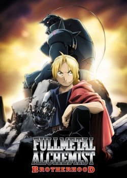
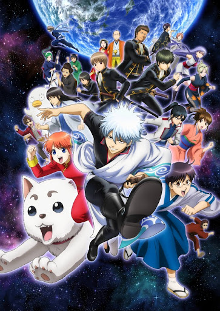
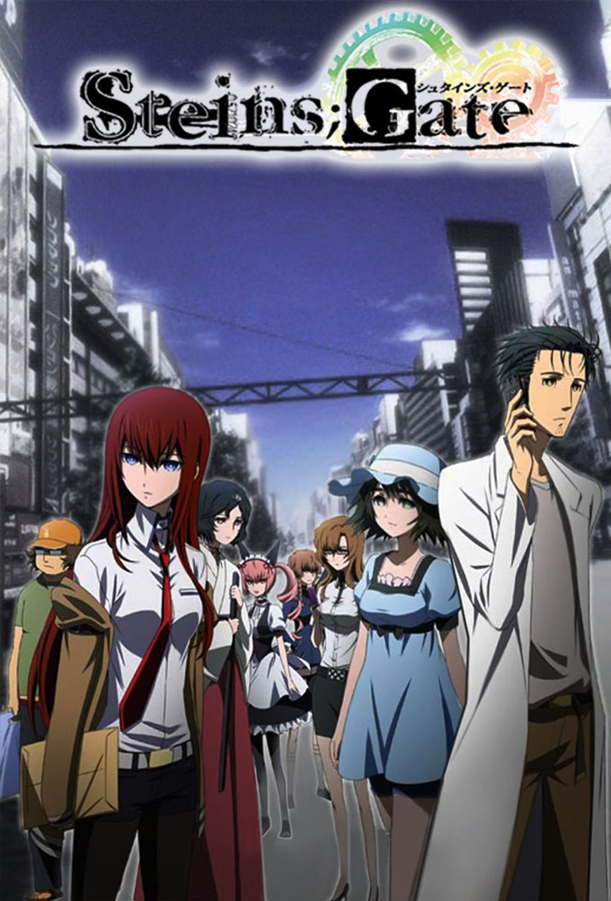

НАВИГАТОР ПО РАЗДЕЛУ
- Популярные студии
- Sunrise
- Toei animation
- Madhouse
- Studio pierott
- Kyoto Animation
- Shaft
- Популярные жанры
- Сенэн
- Седзе
- Приключения
- Повседневность
- Романтика
- Меха
- Популярные персонажи
- Спайк Шпигель
- Ичиго Куросаки
- Итачи Учиха
- Гон Фрикс
- Алукард
- Рой Мустанг
АНИМЕ ОТСОРТИРОВАННЫЕ ПО РЕЙТИНГУ
1. Стальной алхимик: Братство / Fullmetal Alchemist: Brotherhood
Рейтинг - 9.16

Информация:
Тип: TV Сериал
Эпизоды: 64
Длительность эпизода: 24 мин.
Статус: в 2009-2010 гг.
Жанры: Сёнен Экшен Приключения Комедия Драма Фэнтези Военное
Рейтинг: R-17
Лицензировано: Netflix
Описание:
Ремейк одноимённого аниме-сериала «Стальной алхимик» 2003 года, более строго следующий событиям, описанным в манге.
В этом мире существуют алхимики — люди, владеющие искусством алхимии, способностью манипулировать материей и преобразовывать вещество.
Все они ограничены основным Законом алхимии: нельзя алхимическим путём получить что-то, не пожертвовав чем-то равноценным полученному.
Лишь с помощью легендарного философского камня, способ создания которого утерян, можно обойти этот Закон.
Главные герои, братья Эдвард и Альфонс Элрики, пострадали в детстве при попытке вернуть к жизни свою мать, умершую от болезни. Они
забыли основной Закон алхимии и жестоко поплатились за это: Альфонс потерял всё своё тело, а Эдвард — руку и ногу. Эдвард сумел спасти
лишь душу Альфонса, запечатав её в старинных доспехах. Спустя много лет Эдвард сдаёт государственный экзамен на звание алхимика и получает
прозвище «Стальной Алхимик». Братья начинают путешествие с целью найти философский камень и вернуть с его помощью утраченное много лет назад.
------------------------------------------------------------------------------------------------------------------------------------------------------
2. Гинтама 4 / Gintama°
Рейтинг - 9.1

Информация:
Тип: TV Сериал
Эпизоды: 51
Длительность эпизода: 24 мин.
Статус: в 2015-2016 гг.
Жанры: Сёнен Экшен Комедия Фантастика Исторический Пародия Самураи
Рейтинг: PG-13
Описание:
Никто этого уже не ждал и не надеялся, но...
«Простите, что сняли четвертый сезон!», — возвестила студия Sunrise и вернула любимых героев, по которым все уже успели соскучиться, на экраны.
Гинтама снова с нами, и она лучше, чем когда-либо прежде! В ролях: Ёродзуя, Шинсенгуми, Джои, пришельцы — все наши старые-добрые и новые-злые герои.
В Эдо, как обычно, случаются катастрофы местного и вселенского масштаба, а предотвращать их и спасать мир вновь придется нашим веселым и бесшабашным героям.
В основе аниме юмор самого разного калибра: от туалетных шуток до изысканных острот, а кроме того куча отсылок и пародий. Мысль «Как всю съемочную группу
в полном составе до сих пор не засудили?» сломает ваш мозг. Так что приготовьтесь! Ваши стереотипы об аниме будут разрушены навсегда. А сами вы будете рыдать
от смеха, наблюдая за невероятными приключениями самурая с серебряными волосами и его необыкновенными соседями!
------------------------------------------------------------------------------------------------------------------------------------------------------
3. Врата Штейна / Steins;Gate
Рейтинг - 9.1

Информация:
Тип: TV Сериал
Эпизоды: 24
Длительность эпизода: 24 мин.
Статус: с 6 апр. 2011 г. по 14 сент. 2011 г.
Жанры: Драма Фантастика Триллер Психологическое
Рейтинг: PG-13
Описание:
Действие сериала происходит летом 2010 года в Акихабаре. Группа друзей переделывает микроволновку в некое устройство, способное посылать текстовые
сообщения в прошлое. Пока они проводят над устройством различные эксперименты, ими заинтересовывается таинственная организация SERN, которая также проводит
исследования по путешествиям во времени. SERN начинает преследовать друзей, и теперь главным героям предстоит найти способ не быть захваченными ими.